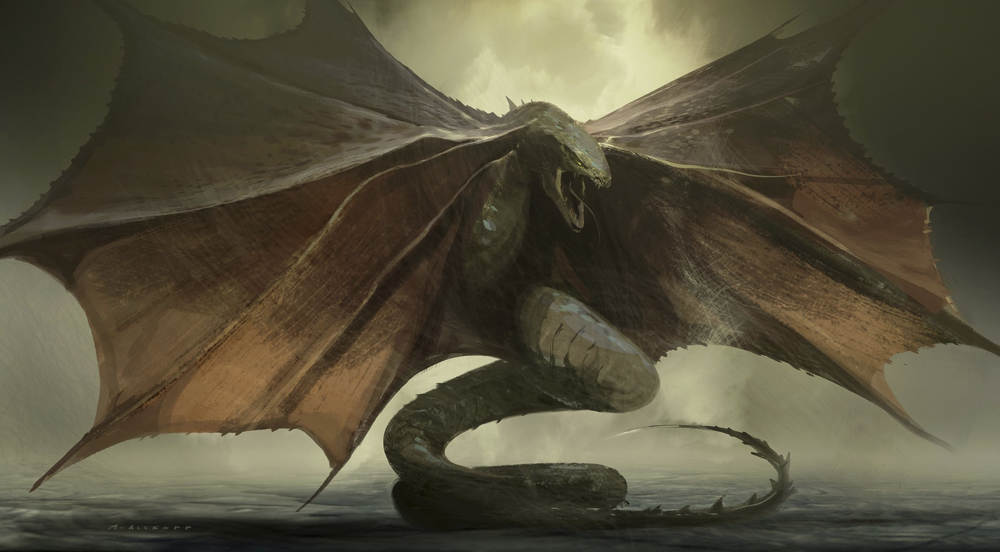

About Warbat

Warbats (ワーバット Wābatto?)[2] are an enormous serpent-like superspecies created by Legendary Pictures that first appeared in the 2021 film, Godzilla vs. Kong. A massive flock of Warbats makes a brief appearance in the 2024 film, Godzilla x Kong: The New Empire.
History
After entering the Hollow Earth through a Vile Vortex in Antarctica in search of an energy source capable of powering a secret weapon being built by Apex Cybernetics, two Hollow Earth Aerial Vehicles, or "HEAVs", followed Kong as the simian Titan begun traversing the lush subterranean landscape, believing the ape would lead them to such an energy source. As the pilots of one of the HEAVs announced that they would circle back around due to interference, the vehicle was suddenly ambushed and destroyed by a Warbat, who crushed the machine in its jaws. A second Warbat attempted to destroy the final HEAV, in which Jia, Ilene Andrews, and Nathan Lind, and Maia Simmons were aboard, but was grabbed onto by Kong. In one swift motion, Kong swung the beast overhead and slammed it to the ground, in which its skull was impaled on a jagged rock formation, killing it instantly. As the first Warbat circled around to attack Kong, the ape swung the second Warbat's lifeless corpse into the remaining one, temporarily staggering the creature.
Quickly recovering from the blow, the Warbat exchanged roars with Kong and lunged after him, biting onto the ape's forearm and coiling its body around him in an attempt to constrict him. Inside the remaining HEAV, Nathan Lind ordered the shuttle's pilots to fire its missile payload at the Warbat in an effort to save Kong. As the barrage of missiles struck the Warbat's back, the beast cried out in agitation and loosened its grip around Kong. Taking advantage, Kong pinned the creature to the ground and folded its wings until they snapped, before proceeding to brutally pummel it to death. Kong then tore the creature's head off and feasted on its innards as they spilled out of its head. After finishing, Kong tossed the Warbat's head aside and continued his journey through the Hollow Earth.
Personality
Warbats are subterranean apex predators that inhabit the rainforests of the Hollow Earth. Possessing an aggressive nature, these creatures employ their serpentine bodies to coil around their prey, employing constriction as a means to bring about their victim's demise, akin to the hunting behavior observed in contemporary constrictor snakes.
Notably, Warbats exhibit the capacity to engage in cooperative hunting endeavors. The two Warbats observed during the assault on Kong demonstrated a synchronized approach, suggesting a collaborative strategy between them to pursue and subdue their target. This glimpse of social behavior is further explored in Godzilla x Kong: The New Empire, where numerous Warbats are seen flying together and preying on smaller creatures in their path.
Design
Warbats are large reptilian serpentine creatures that are grayish in coloration and equipped with two red membranous wings running down the top half of its body, supported by long spines which are extensions of the rib cage. Their torso is similar to that of a snake, being long and slender, presumably evolved to navigate the treacherous terrain of the Hollow Earth when their wings are not in use. The bottom half of their torso also has ventral scales, further adding to the resemblance of a snake.
The head is massive and snake-like, and is armed with two enormous 14-foot-long fangs protruding from their bottom jaw as well as rows of needle-like teeth. The eyes are green, with the pupils being horizontal and almost cat-like, as well as possessing a bony ridge above their eye, resembling that of a crocodile. Warbat blood is light green in coloration.